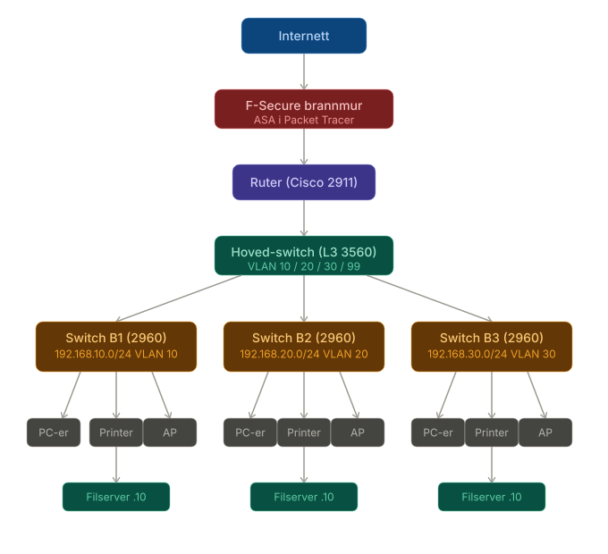

Dokumentasjon
Veileder for IT-ansvarlige i leietakerbedrifter. Her finner du steg-for-steg hjelp til Active Directory, tilgangsstyring og nettverksoppsett.
Last ned veilederen
Åpne hele AD-veilederen som PDF for offline lesing og deling.
Innhold
Del 1: Forutsetninger
Denne delen forklarer hva som må være installert og satt opp på serveren før du kan begynne å bruke Active Directory. Disse stegene gjøres vanligvis kun en gang, av KontorLeie AS sin IT-avdeling, når du flytter inn.
Hva er Windows Server?
Windows Server er operativsystemet som kjører på bedriftens server. Det ligner på vanlig Windows, men er laget for å styre brukere, nettverk og filer for hele bedriften.
Hva må være installert på serveren
Før Active Directory kan brukes, må følgende være gjort på Windows Server. Hvis du er usikker, ta kontakt med KontorLeie AS sin IT-avdeling.
1. Windows Server er installert
Sjekk at du kan starte opp Windows Server og at maskinen fungerer som forventet. Dette skal allerede være gjort når du får serveren. Hvis ikke, kontakt KontorLeie AS sin IT-avdeling.
2. Active Directory Domain Services (AD DS) er installert
AD DS er selve programvaren som lar deg administrere brukere og tilganger. Den må installeres separat, men kommer med din installasjon.
- Klikk på Start-knappen nede til venstre på serveren
- Klikk på 'Server Manager' (dette er administrasjonsprogrammet for serveren)
- Se i venstre meny - hvis du ser 'AD DS' i lista, er det installert
3. Et domene er opprettet
Et domene er et fellesområde der alle brukere og datamaskiner er samlet under ett navn. Alle PC-er og brukere i bedriften din er registrert her. Domenenavnet ser gjerne slik ut: bedrift1.lokal
- Klikk Start på serveren
- Søk etter 'Active Directory Users and Computers' og åpne programmet
- Hvis du ser et mappenavn (f.eks. bedrift1.lokal) i venstre panel, er domenet klart
4. PC-ene er koblet til domenet
Når en PC er koblet til domenet, betyr det at den lar brukere logge inn med kontoene du oppretter i Active Directory. En PC som ikke er koblet til domenet, fungerer uavhengig og kjenner ikke til brukerne du lager.
- Høyreklikk på Start-knappen på PC-en
- Velg System
- Se under 'Computer name, domain and workgroup settings'
- Hvis det står 'Domain: bedrift1.lokal' (eller lignende), er PC-en koblet til domenet
Topologi
Internett-linjen går inn i F-Secure brannmuren. Brannmuren sitter mellom internett og resten av nettverket og kontrollerer all trafikk inn og ut. Bak brannmuren kobles ruteren, som videreformidler trafikk mellom subnettene og ut mot internett. Ruteren kobles til hoved-switchen (L3), som igjen kobles til én dedikert L2 managed switch per bedrift via trunk-porter.

Hver bedriftsswitch kobles videre til ethernet-porter i veggen og trådløse aksesspunkter (AP) for tilkobling av utstyr.
Subnett og VLAN
Hver bedrift får et isolert subnett og VLAN. Utstyr på ett subnett kan ikke kommunisere med utstyr på et annet.
| VLAN | Subnett |
|---|---|
| Bedrift 1 | 192.168.10.0/24 |
| Bedrift 2 | 192.168.20.0/24 |
| Bedrift 3 | 192.168.30.0/24 |
| Management | 192.168.1.0/24 |
Statiske IP-adresser per bedrift
| Enhet | B1 | B2 | B3 |
|---|---|---|---|
| Filserver | 192.168.10.10 | 192.168.20.10 | 192.168.30.10 |
| Nettverksprinter | 192.168.10.20 | 192.168.20.20 | 192.168.30.20 |
| Gateway | 192.168.10.1 | 192.168.20.1 | 192.168.30.1 |
Øvrig utstyr (PC-er, AP-er) tildeles IP automatisk via DHCP innenfor .100–.200.
Tilgangsstyring
IT-ansvarlige i hver bedrift har begrenset tilgang til egen switch (VLAN-konfigurasjon, feilsøking). De har ikke tilgang til hoved-switchen eller andre bedrifters utstyr. Brannmuren styrer portåpninger og blokkerer trafikk mellom subnettene.
Del 2: Opprette en ny bruker
Hva er en bruker i Active Directory?
En bruker er en konto som en person bruker for å logge inn på PC-en og få tilgang til filer og programmer. Tenk på det som et digitalt ID-kort. Uten en konto kan ikke den ansatte logge inn på noen av bedriftens PC-er.
Steg 1: Åpne administrasjonsprogrammet
- Klikk på Start-knappen på serveren
- Skriv inn: Active Directory Users and Computers
- Klikk på programmet når det dukker opp i søkeresultatet
Steg 2: Finn riktig mappe
En OU er en mappe inne i Active Directory der du sorterer brukere. Akkurat som du sorterer filer i mapper på PC-en, sorterer du brukere i OU-er. Du bør ha en mappe kalt 'Brukere' under bedriftens navn.
- Klikk på pilen ved siden av domenenavnet for å utvide treet
- Finn mappen som heter 'Brukere' (eller 'Users')
- Klikk på den mappen så den er markert
Steg 3: Opprett brukeren
- Høyreklikk på 'Brukere'-mappen
- Velg New > User
Fyll inn First name, Last name, Full name og User logon name, og klikk Neste når feltene er fylt ut.
Steg 4: Sett passord
- Skriv inn et midlertidig passord i begge passordfeltene
- Huk av 'User must change password at next logon'
- Klikk Neste
- Klikk Fullføre / Finish
Steg 5: Legg brukeren i en gruppe
En gruppe er en samling av brukere. I stedet for å gi tilgang til mapper én og én, gir du tilgang til en gruppe. Når du legger en bruker i gruppen, får de automatisk de samme tilgangene.
- Høyreklikk på den nye brukeren du nettopp opprettet
- Velg Properties
- Klikk på fanen: Member Of
- Klikk Add
- Skriv inn gruppenavnet, f.eks. Ansatt_Bedrift1
- Klikk OK, og deretter OK igjen
Del 3: Gi tilgang til mapper og filer
Slik fungerer tilgangsstyring
Tenk deg at filserveren er et kontorbygg med mange rom. Noen rom er åpne for alle ansatte. Andre rom er kun for ledere. Du bestemmer hvem som kommer inn i hvilke rom ved å gi grupper en nøkkel. Når du legger en person i gruppen, får de den nøkkelen automatisk.
I praksis fungerer det i to steg:
- Steg A: Du oppretter en gruppe i Active Directory
- Steg B: Du gir den gruppen tilgang til en mappe på filserveren
Steg A: Opprett en gruppe
- Åpne Active Directory Users and Computers
- Finn mappen 'Grupper' under bedriftens domene. Hvis den ikke finnes, bruk 'Brukere'-mappen
- Høyreklikk på mappen > New > Group
- Gi gruppen et navn. Bruk formatet: Rolle_Bedriftsnavn
- Under Group type: velg Security
- Under Group scope: velg Global
- Klikk OK
Steg B: Gi gruppen tilgang til en mappe
Dette gjøres på filserveren, i Windows Utforsker (File Explorer).
- Åpne Windows Utforsker på serveren
- Naviger til mappen du vil gi tilgang til
- Høyreklikk på mappen > velg Properties
- Klikk på fanen: Security
- Klikk: Edit
- Klikk: Add
- Skriv inn gruppenavnet (f.eks. Ansatt_Bedrift1) og klikk OK
- Velg riktig tilgangsnivå i lista
- Klikk OK, og deretter OK igjen
Hvilken tilgang skal du gi?
| Tilgangsnivå | Kan gjøre | Bruk dette til |
|---|---|---|
| Read | Åpne og lese filer | Delte maler, informasjon alle skal se men ikke endre |
| Modify | Lese, skrive og slette filer | Vanlige ansatte - den vanligste innstillingen |
| Full Control | Alt - inkludert å endre tilganger | Kun IT-ansvarlig |
Test at tilgangen fungerer
- Logg inn på en PC med brukerkontoen du nettopp opprettet
- Åpne Windows Utforsker og naviger til mappen
- Prøv å åpne en fil - det skal fungere
- Prøv å åpne en mappe du IKKE skal ha tilgang til - du skal få meldingen 'Access denied'
Del 4: Hurtigreferanse
Når en ansatt slutter
- Åpne Active Directory Users and Computers
- Finn brukeren i 'Brukere'-mappen
- Høyreklikk på brukeren > velg Disable Account
- Brukeren kan ikke lenger logge inn, men kontoen og filene er fortsatt lagret
Vanlige problemer og løsninger
| Problem | Løsning |
|---|---|
| Brukeren kan ikke logge inn | Sjekk om kontoen er låst. Høyreklikk brukeren i Active Directory > 'Unlock Account'. Sjekk også at passordet ikke er utløpt. |
| Brukeren ser ikke mappen på filserveren | Sjekk at brukeren er lagt til i riktig gruppe. Høyreklikk bruker > Properties > Member Of. Logg brukeren ut og inn igjen etterpå. |
| Brukeren får 'Access denied' på en mappe de skal ha tilgang til | Sjekk NTFS-tillatelsene på mappen: høyreklikk mappe > Properties > Security. Sjekk at gruppen er der og har riktig tilgangsnivå. |
| Brukeren glemte passordet | Høyreklikk bruker > 'Reset Password'. Sett et nytt midlertidig passord og huk av 'must change at next logon'. |
| En ny PC kobles ikke til domenet | Pass på at PC-en er koblet til bedriftens nettverk. Kontakt KontorLeie AS sin IT-avdeling for hjelp. |
Sjekkliste - ny ansatt
- Brukerkonto opprettet med fornavn, etternavn og brukernavn
- Midlertidig passord satt - bruker må bytte ved første innlogging
- Brukeren er lagt til i riktig gruppe (f.eks. Ansatt_Bedrift1)
- Tilgang til fellesmapper er testet og fungerer
- Brukeren har fått sitt brukernavn og midlertidige passord
Kontakt
Trenger du hjelp med noe som ikke er dekket i denne veilederen?